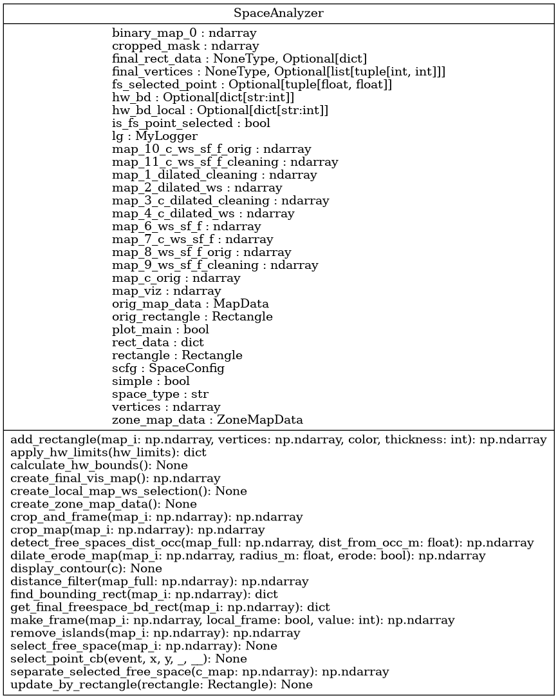

covpp.spa
Submodules
covpp.spa.inscribed_rectangle_histogram
Find the largest inscribed rectangle in a binary map using histogram method.
- largest_rectangle_in_histogram(heights)
- find_largest_inscribed_rectangle(mask)
- find_largest_in_rectangle(map_i: numpy.ndarray) dict | None
find largest rectangle in the biggest open space contour.
- find_inscribed_rotated_rectangle(map_i: numpy.ndarray) dict | None
covpp.spa.spa_rectangles
Utility functions for SPA (Spatial Analysis) involving rectangle detection in maps.
- find_circumscribed_rectangle(map_i: numpy.ndarray) dict
Find the minimum area rectangle that circumscribes all free cells in the map.
- Method:
Find contours of the free cells in the map.
Combine all contours to get the minimum area rectangle using cv.minAreaRect.
- Returns:
{"vertices": [(x, y), ...], "rect_data": {"xc": xc, "yc": yc, "rot": rot, "w": w, "h": h}}
- Return type:
dict
- find_inscribed_rotated_rectangle_1(map_i: numpy.ndarray) dict
Find the maximum area rectangle that can be inscribed within the free cells in the map.
- Method:
Find contours of the free cells in the map.
Find the largest contour and fit a rotated rectangle around it.
Extract the center, size, and angle of the minimum area rectangle.
4. For various scales and rotations of the rectangle: a. Scale the rectangle. b. Rotate the rectangle. c. Check if all vertices of the rectangle lie within the largest contour. d. If yes, calculate the area and update the best rectangle if it's larger than the previous best. 5. Return the best rectangle found.
- Returns:
{"vertices": [(x, y), ...], "rect_data": {"xc": xc, "yc": yc, "rot": rot, "w": w, "h": h}}
- Return type:
dict
- find_inscribed_rotated_rectangle(map_i: numpy.ndarray) dict
covpp.spa.space_analyzer


Module contents